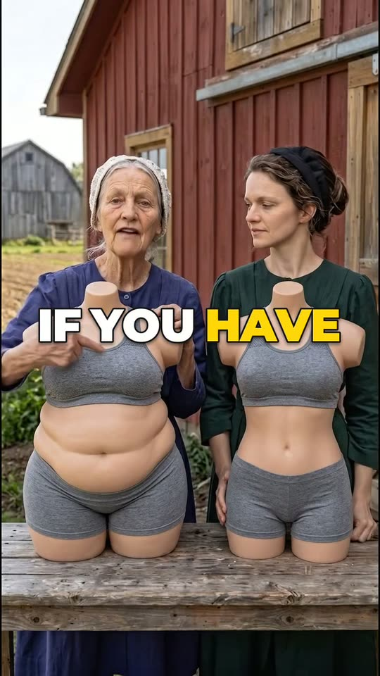
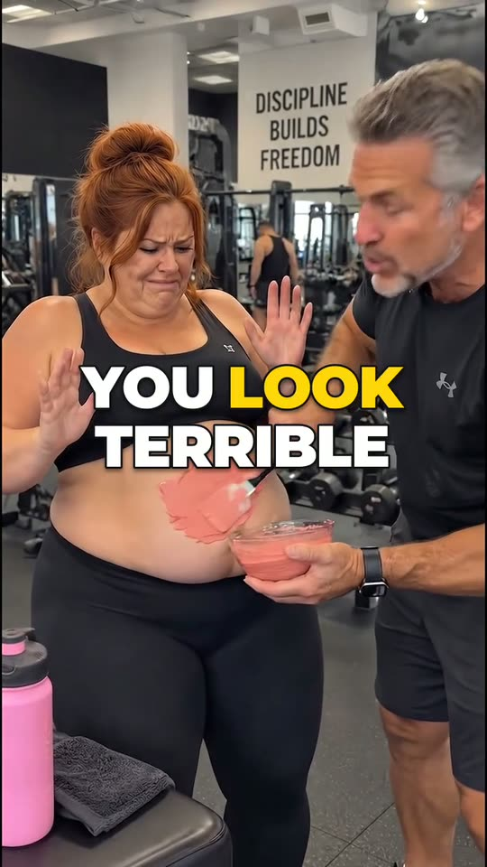
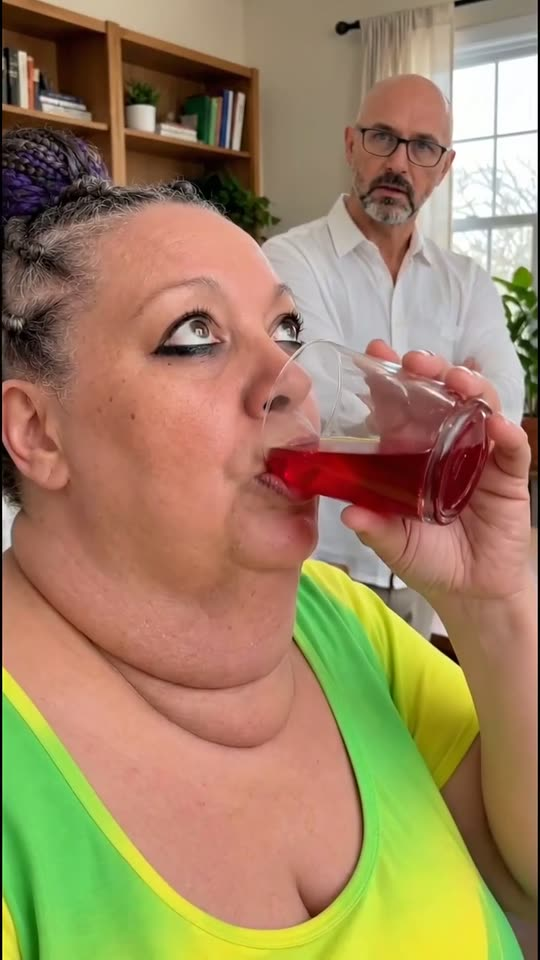
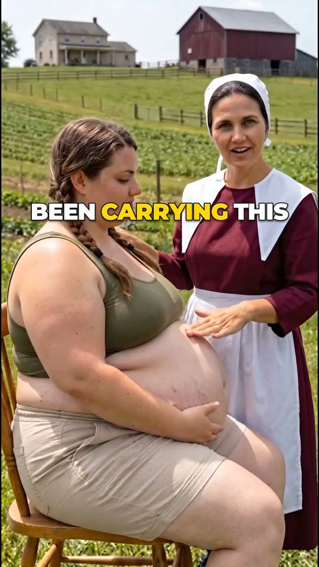
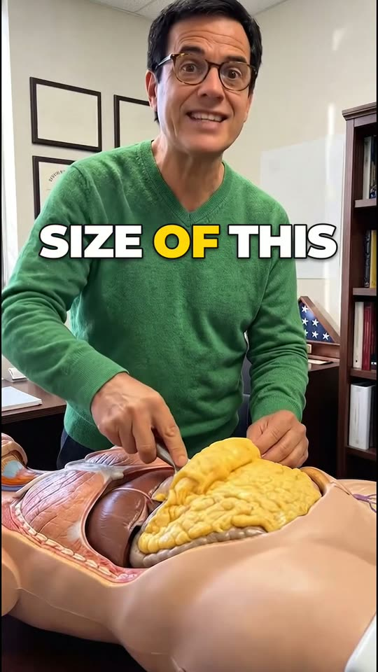
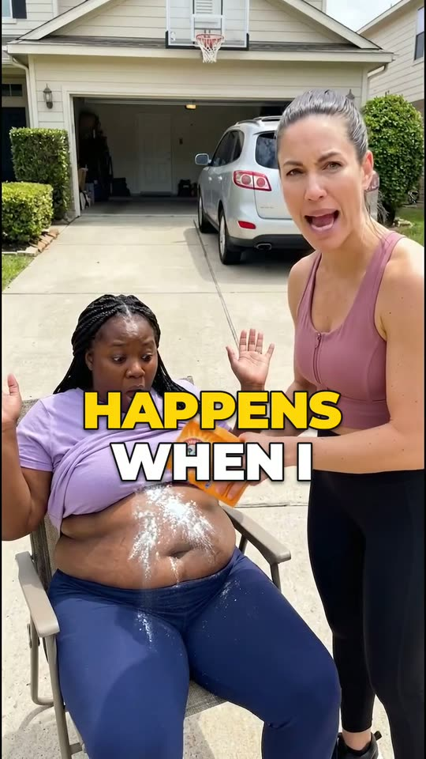
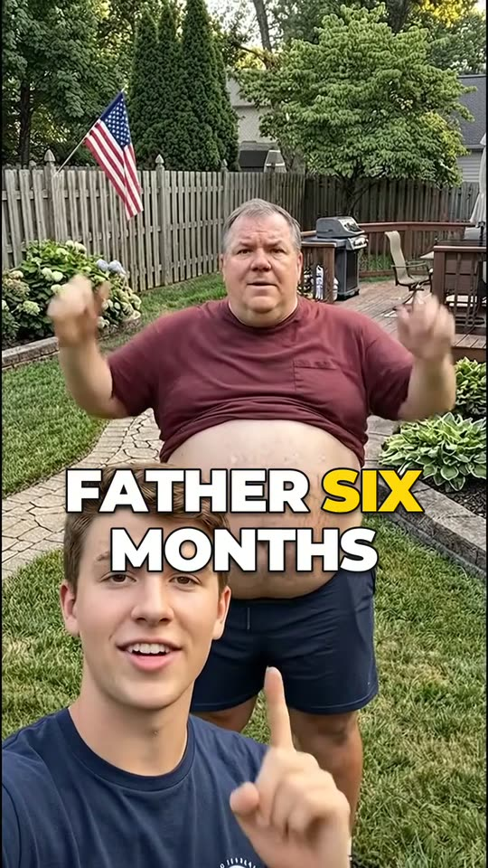

This is what baking soda does to your belly.
Cozinha/0:29/720×1280
Organic Wave · Video Studio
Vídeo vertical para short-form, gerado do zero: elenco, cenário, câmera e locução. Clique em qualquer quadro para assistir com som.
Toca uma por vez · som ligado
This is what baking soda does to your belly.
Cozinha/0:29/720×1280
This is what baking soda does to 20 years of belly fat.
Consultório/0:26/540×960

If you have a belly like this and want to look like this before summer.
Celeiro/0:20/720×1280

Oh my God, you look terrible like this.
Academia/0:21/720×1280

Every damn day people are asking me the exact same question.
Sala/0:33/720×1280

This woman has been carrying this for 20 years.
Fazenda/0:24/720×1280
Do you have a belly like this and you want it looking like this for summer?
Clínica/0:31/720×1280
This is what baking soda pulls out of your gut in only 10 days.
Consultório/0:26/540×960
This is what baking soda does.
Biblioteca/0:25/720×1280

Look at the size of this chunk coming out of her belly.
Escritório/0:25/720×1280

Ladies, watch what happens when I pour baking soda right on her belly.
Garagem/0:22/720×1280

This was my father six months ago, struggling with obesity and beer belly.
Quintal/0:17/720×1280